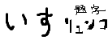

とうげ廃ホテルの巻
峠 休憩所
「ん？圏外か……」
「どうかしましたか？」
「いいや、大したことじゃあない。」
「先生、見てください。100円入れる望遠鏡ありますよ。あそこのデッキです。」
「ふーん、興味あるなら見てきたら？」
「いえ私は子供じゃないのでいいですけど、先生はこういうのわくわくしないんですか？」
「僕だって望遠鏡くらいではしゃぎゃしないよ。」
「せっかくだし行ってみてくださいよ。」ｸﾞｲｸﾞｲ
休憩所 デッキ
「結構眺めのいい場所だな。」
「瀬戸内海がよく見えますね。」
「しかし、この双眼望遠鏡、かなりボロじゃないか？根元のナットなんか錆びて外れているぞ。」
「あら本当だ〜。ステップに足載せただけでグラグラする。ボヨンボヨン揺れて遊具みたい。」
「入れるか？100円。」
「潮風ですかねえ。」
「……。」ﾀﾞﾝﾏﾘ
「どうしたんですか？向こう見たまま黙っちゃって。」
「ちょっと気になるんだが、入れてみてくれないか？望遠鏡。」
「やっぱり興味あるんじゃないですか。何をご覧になるんです？船？瀬戸大橋？」
「いや、こっち。そこのホテルの建物だ。」
「ホテル？」
「あそこの部屋まで首が回るか確かめたいんだ。」
「先生、のぞきをなさるんですか？」
「ホテルの室内自体はどうでもいいが、ここから覗くのが可能かどうかは気になるだろ。」
「漫画のネタですか？」
「そうだ。」
「でも、見えないと思うなあ。そんなことできたら、これを設置した人間は間抜けです。」
「そー言わずやってみろよ。どうせあそこは営業してないホテルだ。」
「ええ？そうなんですか？」
「見るからにに外壁が古ぼけてるじゃないか。」
「廃墟？やっぱりあたし遠慮します。そんなとこ覗くなんて気味が悪いです。」
「ただのがらんどうの建物だろ。何がいるわけでもない。」
「そう仰るなら先生がど、う、ぞ！」ｸﾞｲｯﾊﾞｷｯ
「あっ、今バキッて、君。」
「うわっ、本当にボロですねえこの子。ほら、これでいい感じにホテルの方、向きました。よかったですね。」
「君ねえ、壊したら意味がないんだけど。」
「あら、入れた100円が横から出てきちゃう。」ﾁｬﾘｰﾝ
「……本当に見れるんだろうな、これ。」ｼﾞｰｯ
「どうですか？」
「ん、みえるぞ。窓ガラスが……無いな。バルコニーの仕切りも破れている。君もどう？」
「だからいやです。もう車にもどりましょう？」
休憩所 駐車場
「またライダーが来た。多いな。」
「バイク何台か停まってますし、ここはツーリングでよく利用されてるんですね。」
「スタンプラリー押すか？」
「いりませんよ。先生だって興味ないくせに。」
「まあ……あれ？なんだこの道。」
「道？今度は何です？なんか迷ったんですか？」
「こっちだ。みろ。舗装されてないが、擬木材でゆるい階段になってる。海へ降りる方向に延びているな。来るときは気付かなかった。」
「はあ、こんなとこからどこに繋がってるんでしょうね。森しかないのに。」
「違うな。ひとつだけ建物が、ホテルがある。」
峠 廃ホテル前
ｺﾞｺﾞｺﾞｺﾞｺﾞｺﾞ
「何でこんなとこ来ちゃうんですかあ。」
「意外と下ってすぐだったな。」
「なんだか近くで見るとずっと廃墟然としてますね。」
「一、ニ階部分はトタンの塀で遮られて見えないな。」
「この塀、林の奥までずっと続いてるんですかね？」
「ホテルをぐるっと取り囲んでいるんだろうな。」
「建物、落描き、されてますね。壁。」
「あの3階のラクガキ、わざわざ窓から乗り出さないと描けないぞ。まったくご苦労なことだ。」
「先生、これからここに侵入るんですか？やめましょうよ。犯罪ですよ。」
「なんでそうなる。」
「え？だって。違うんですか？こういう『出そう』なとこお好きでしょう。」
「あのなあ、だからってなんでも喜んでホイホイ乗り込むぼくじゃないからな。今のところ、この建物にそれほど興味はないし。戻るぞ。」
「ええ……？じゃあなんで近くまで来たんです。」
「なんだいその顔。僕が法を守るのがそんなに珍しいかい。」
休憩所 駐車場
「でも、どうやって侵入したんでしょう？」
「何が？」
「ホテルの外壁にラクガキした人ですよ。」
「どうやって、とは？」
「トタン板の塀があったのにどこも壊されていませんでした。」
「おいおい、ぼくたちが見た塀は南側たった1面だけなんだぜ？」
「そうですね、反対側までぐるっと歩いて探せば、壊された穴があったのかも。」
「確かに、トタンの高さは２メートル半程度あった。腕力だけでのぼるのは難しいな。」
「塀ができる以前の侵入だったということもあるでしょうね」
「錆びていた。枝葉をかいくぐる潮風にしても、あのラクガキのペンキよりは年季が入っている。」
「どこかに出入口とか、低くなっている部分、登りやすい木、踏み台になるものがあったかもしれません。」
「何が疑問なんだ？」
「全部、手間がかかることじゃないですか。」
「……少なくともぼくたちは見に行かなかった。そういうことか」
「脚立とか、道具とか車に積んで、しっかり計画を立てて来たり、忍耐づよく探したりするのは、なんかイメージと違うんですよね。」
「そうかもな。麓まで往復2時間のこんな山の上の廃墟だ。たまり場にしていたとも考えづらい。」
「彼らはたぶん行き当たりばったりですよ。そう思うと悔しくないですか？グラフィティの犯罪者にできたことが、私たちに思いつかないんです。」
「じゃあもう一回見てくるか？」
「だめです。時間をかけることじゃない、凄く簡単な方法のはずなんです。」
「つまり、今、ここで思いつけと。」
「私はプロの編集者で、先生はプロのアーティストです。法にのっとって芸術活動をする社会人です。負けられません。」
「……ところで、ぼくはこの峠気に入ったよ。次来るときはバイクもいいな。」
「ええ、風も眺めも素敵な、とても美しいところ。」
「バイクを停めたら、うんと背筋をのばして、シートに立ってみる。丁度いい高さになるんじゃないか？」
「塀をこえるのに……、バイクを踏み台代わりにするってことですか。」
「これなら簡単だろ？」
「んー……」
「歯切れが悪いな。」
「だいぶすっきりしました。ありがとうございます。露伴先生。」
峠道 車内
「まだ仕事の約束まで時間あるな。」
「それじゃあ、下の砂浜行くのどうですか？いかにも青松白砂という感じらしいですよ。」
「浜か。瀬戸内海って近くで見るとどうにも落ち着かないんだよな。音も匂いもしないからな。」
「さっきの廃ホテルの話ですけど」
「自分でも思ったから言わせてほしいんだけど、あれは入る方法だけで、出る方法が全くない。」
「思い付きで実行したら閉じ込められかねませんね。」
「そんなバカな話はないな。」
「結局、どこかに楽な出入り口があったと考えるのが妥当なんですかね。うーん、やっぱり何か悔しい。」
「海行くんだろ。道。」
「もー、分かりました。たしか、地図地図……でもおかしいな、一本道のはずなんだけど。」
「それにしても、なかなか携帯の電波が戻らないぞ。」
トップへ
